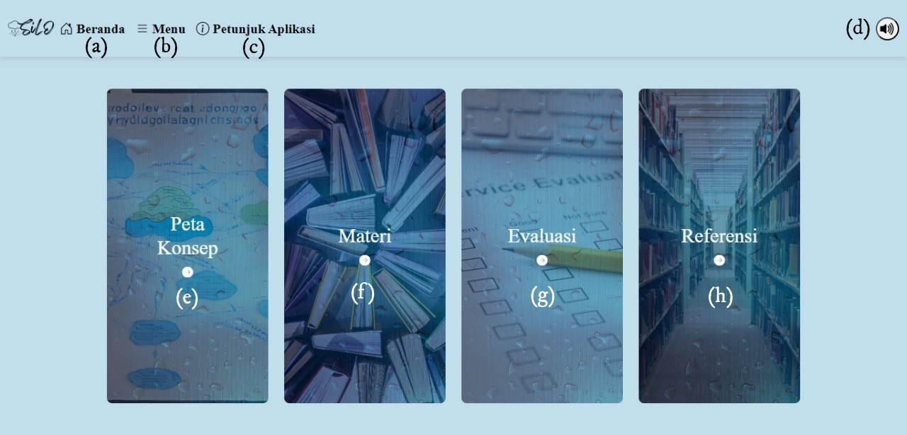

Petunjuk Penggunaan Aplikasi
Aplikasi ini dirancang untuk membantu pengguna dalam memahami konsep siklus hidrologi. Berikut adalah beberapa petunjuk untuk memudahkan penggunaan aplikasi ini:
1. Beranda
Pengguna dapat mengklik tombol Beranda untuk kembali ke halaman utama aplikasi. Di halaman utama, pengguna akan menemukan informasi umum tentang aplikasi dan pengenalan singkat mengenai siklus hidrologi. Ini adalah tempat yang bagus untuk memulai eksplorasi.
Detail:
- (a). Mengarahkan pengguna ke halaman beranda, yaitu halaman utama.
- (b). Mengarahkan pengguna ke halaman menu, yang berisi peta konsep, materi pembelajaran, evaluasi, dan referensi.
- (c). Mengarahkan pengguna ke halaman petunjuk penggunaan aplikasi.
- (d). Mengarahkan pengguna ke halaman menu, yang berisi peta konsep, materi pembelajaran, evaluasi, dan referensi.
- (e). Sebagai tombol on or off music.
2. Menu
Pada bagian Menu, pengguna akan diarahkan ke halaman yang berisi peta konsep, materi pembelajaran, evaluasi, dan referensi. Halaman ini menyediakan struktur yang jelas dan navigasi yang mudah untuk menemukan berbagai sumber daya yang disediakan dalam aplikasi ini.
Detail:
- (a). Mengarahkan pengguna ke halaman beranda, yaitu halaman utama.
- (b). Mengarahkan pengguna ke halaman menu, yang berisi peta konsep, materi pembelajaran, evaluasi, dan referensi.
- (c). Mengarahkan pengguna ke halaman petunjuk penggunaan aplikasi.
- (d). Sebagai tombol on or off music.
- (e). Mengarahkan pengguna ke halaman peta konsep.
- (f). Mengarahkan pengguna ke halaman materi.
- (g). Mengarahkan pengguna ke halaman evaluasi.
- (h). Mengarahkan pengguna ke halaman referensi.
3. Materi
Untuk mulai mempelajari materi, pengguna dapat mengklik tombol Materi pada menu. Tombol ini akan membawa pengguna ke halaman materi.
Detail:
- (a). Mengarahkan pengguna ke halaman beranda, yaitu halaman utama.
- (b). Mengarahkan pengguna ke halaman menu, yang berisi peta konsep, materi pembelajaran, evaluasi, dan referensi.
- (c). Mengarahkan pengguna ke halaman petunjuk penggunaan aplikasi.
- (d). Sebagai tombol on or off music.
- (e). Mengarahkan pengguna ke halaman ayo menyimak yang berisi teks dan suara dari materi.
- (f). Mengarahkan pengguna ke halaman ayo mengamati yang berisi video dari materi pembelajaran.
- (g). Mengarahkan pengguna ke halaman ayo membuat yang berisi tentang cara-cara untuk membuat diorama siklus hidrologi.
4. Menyimak, Mengamati, dan Membuat
Pengguna juga dapat menemukan fitur mengamati dan membuat yang membantu mereka dalam proses pembelajaran interaktif. Bagian ini memberikan panduan langkah demi langkah tentang bagaimana membuat model siklus hidrologi dan bagaimana mengamati proses-proses yang terjadi dalam siklus ini.

Detail:
- (a). Mengarahkan pengguna ke halaman beranda, yaitu halaman utama.
- (b). Mengarahkan pengguna ke halaman menu, yang berisi peta konsep, materi pembelajaran, evaluasi, dan referensi.
- (c). Mengarahkan pengguna ke halaman petunjuk penggunaan aplikasi.
- (d). Menampilkan petunjuk yang perlu diikuti pengguna.
5. Referensi
Halaman referensi berisi sumber-sumber materi dari isi aplikasi ini.
Detail:
- (a). Mengarahkan pengguna ke halaman beranda, yaitu halaman utama.
- (b). Mengarahkan pengguna ke halaman menu, yang berisi peta konsep, materi pembelajaran, evaluasi, dan referensi.
- (c). Mengarahkan pengguna ke halaman petunjuk penggunaan aplikasi.
- (d). Sebagai tombol on or off music.
- (e). Mengarahkan pengguna ke web W3Schools yang pertama, yaitu HTML Tutorials.
- (f). Mengarahkan pengguna ke web W3Schools yang kedua, yaitu CSS Tutorials.
- (g). Mengarahkan pengguna ke web W3Schools yang ketiga, yaitu JavaScript Tutorials.
- (h). Mengarahkan pengguna ke web Bootstrap Tutorials.
6. Peta Konsep
Halaman peta konsep berisi sumber-sumber materi dari isi aplikasi ini.
Detail:
- (a). Mengarahkan pengguna ke halaman beranda, yaitu halaman utama.
- (b). Mengarahkan pengguna ke halaman menu, yang berisi peta konsep, materi pembelajaran, evaluasi, dan referensi.
- (c). Mengarahkan pengguna ke halaman petunjuk penggunaan aplikasi.
- (d). Sebagai tombol on or off music.
Halaman peta konsep ini menyajikan rangkuman sumber-sumber materi mengenai siklus hidrologi. Di dalam halaman ini, Anda akan menemukan penjelasan rinci dari berbagai sub bab yang mencakup semua aspek siklus hidrologi. Berikut adalah sub bab yang disertakan:
- (e). Siklus Hidrologi - Pengenalan dan definisi dasar dari siklus hidrologi.
- (f). Tahapan Siklus Hidrologi - Uraian mengenai tahapan-tahapan yang dilalui air selama siklus hidrologi.
- (g). Proses-Proses Siklus Hidrologi - Penjelasan mengenai berbagai proses yang terjadi dalam siklus hidrologi.
- (h). Siklus Pendek - Deskripsi siklus hidrologi yang memiliki perjalanan air yang lebih singkat.
- (i). Siklus Sedang - Penjelasan mengenai siklus hidrologi dengan perjalanan air yang lebih kompleks dibandingkan siklus pendek.
- (j). Siklus Panjang - Uraian tentang siklus hidrologi dengan perjalanan air yang panjang dan melibatkan berbagai komponen ekosistem.
- (k). Evaporasi - Proses penguapan air dari permukaan bumi ke atmosfer.
- (l). Transpirasi - Proses penguapan air yang berasal dari tumbuhan.
- (m). Evapotranspirasi - Kombinasi dari evaporasi dan transpirasi, menggambarkan keseluruhan proses kehilangan air dari permukaan bumi dan tumbuhan.
- (n). Kondensasi - Proses perubahan uap air menjadi air cair di atmosfer, yang membentuk awan.
- (o). Presipitasi - Proses jatuhnya air dari atmosfer ke permukaan bumi dalam bentuk hujan, salju, atau bentuk lainnya.
- (p). Infiltrasi - Proses masuknya air ke dalam tanah dan menjadi bagian dari air tanah.
- (q). Run off - Aliran air di permukaan tanah yang menuju ke sungai, danau, atau laut.
Halaman ini dirancang untuk membantu Anda memahami secara menyeluruh dan terstruktur mengenai siklus hidrologi dan proses-proses terkait. Setiap sub bab dilengkapi dengan penjelasan yang mudah dipahami dan dilengkapi dengan ilustrasi serta contoh-contoh yang relevan untuk mempermudah pemahaman Anda.
7. Evaluasi
Halaman ini berisi evaluasi untuk menguji pemahaman Anda terhadap materi yang telah dipelajari dalam aplikasi ini.
Detail:
- (a). Mengarahkan pengguna ke halaman beranda, yaitu halaman utama.
- (b). Mengarahkan pengguna ke halaman menu, yang berisi peta konsep, materi pembelajaran, evaluasi, dan referensi.
- (c). Mengarahkan pengguna ke halaman petunjuk penggunaan aplikasi.
- (d). Sebagai tombol on or off music.
- (e). Sebagai tombol untuk memunculkan petunjuk pengerjaan evaluasi.
- (f). Mengarahkan pengguna ke soal sebelumnya.
- (g). Mengarahkan pengguna ke soal selanjutnya.
- (h). Mengarahkan pengguna untuk mensubmit evaluasi jika pengguna sudah selesai mengerjakan.